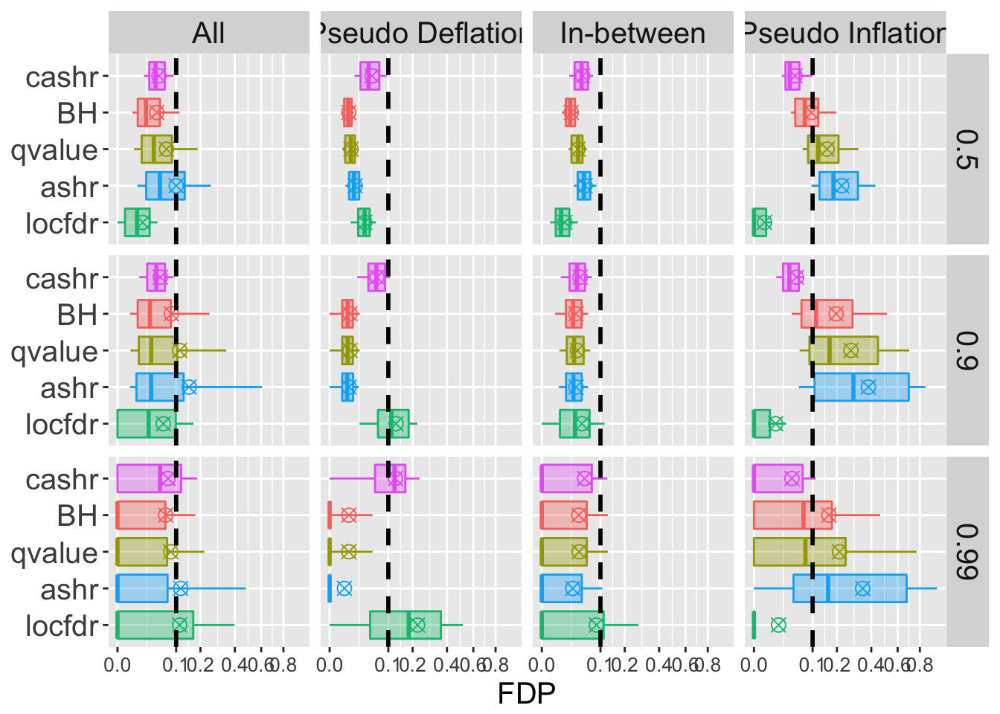
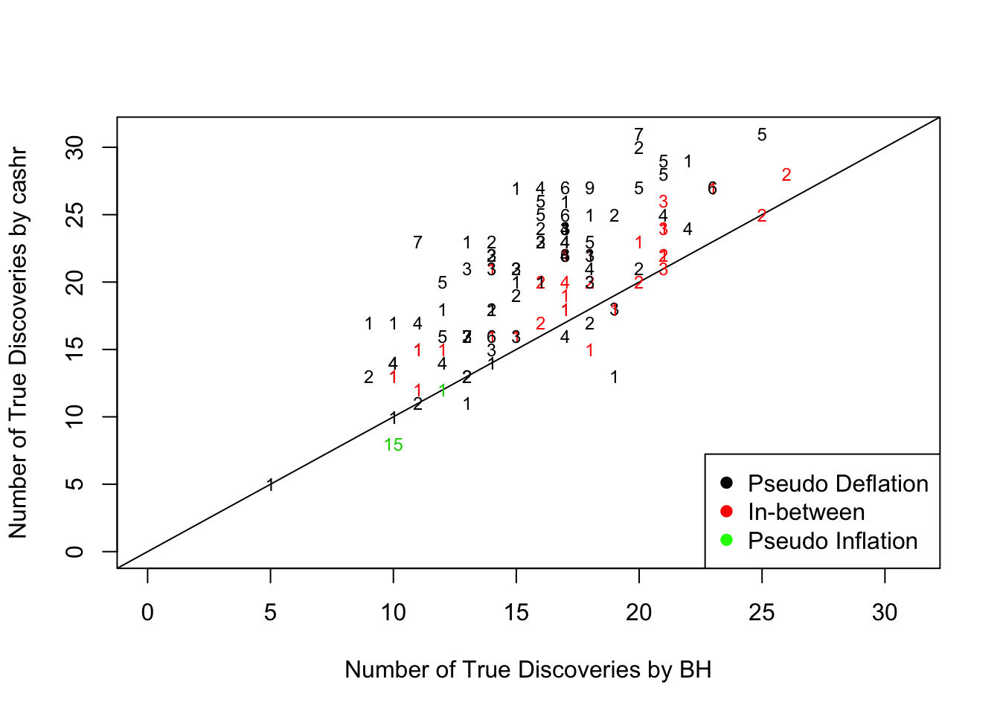
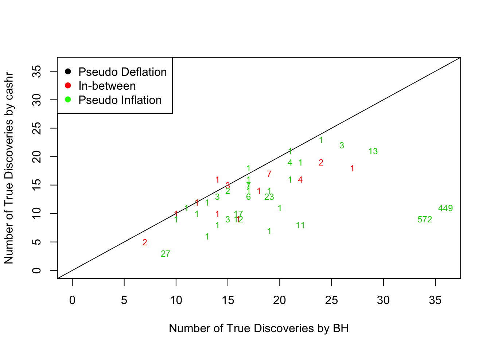

cashr comparison: ashr with uniform: \(\pi_0 = 0.99\)Last updated: 2018-10-12
workflowr checks: (Click a bullet for more information) ✔ R Markdown file: up-to-date
Great! Since the R Markdown file has been committed to the Git repository, you know the exact version of the code that produced these results.
✔ Environment: empty
Great job! The global environment was empty. Objects defined in the global environment can affect the analysis in your R Markdown file in unknown ways. For reproduciblity it’s best to always run the code in an empty environment.
✔ Seed:
set.seed(12345)
The command set.seed(12345) was run prior to running the code in the R Markdown file. Setting a seed ensures that any results that rely on randomness, e.g. subsampling or permutations, are reproducible.
✔ Session information: recorded
Great job! Recording the operating system, R version, and package versions is critical for reproducibility.
✔ Repository version: f20502c
wflow_publish or wflow_git_commit). workflowr only checks the R Markdown file, but you know if there are other scripts or data files that it depends on. Below is the status of the Git repository when the results were generated:
Ignored files:
Ignored: .DS_Store
Ignored: .Rhistory
Ignored: .Rproj.user/
Ignored: analysis/.DS_Store
Ignored: analysis/BH_robustness_cache/
Ignored: analysis/FDR_Null_cache/
Ignored: analysis/FDR_null_betahat_cache/
Ignored: analysis/Rmosek_cache/
Ignored: analysis/StepDown_cache/
Ignored: analysis/alternative2_cache/
Ignored: analysis/alternative_cache/
Ignored: analysis/ash_gd_cache/
Ignored: analysis/average_cor_gtex_2_cache/
Ignored: analysis/average_cor_gtex_cache/
Ignored: analysis/brca_cache/
Ignored: analysis/cash_deconv_cache/
Ignored: analysis/cash_fdr_1_cache/
Ignored: analysis/cash_fdr_2_cache/
Ignored: analysis/cash_fdr_3_cache/
Ignored: analysis/cash_fdr_4_cache/
Ignored: analysis/cash_fdr_5_cache/
Ignored: analysis/cash_fdr_6_cache/
Ignored: analysis/cash_paper_fig_leukemia_cache/
Ignored: analysis/cash_plots_2_cache/
Ignored: analysis/cash_plots_3_cache/
Ignored: analysis/cash_plots_4_cache/
Ignored: analysis/cash_plots_5_cache/
Ignored: analysis/cash_plots_cache/
Ignored: analysis/cash_sim_1_cache/
Ignored: analysis/cash_sim_2_cache/
Ignored: analysis/cash_sim_3_cache/
Ignored: analysis/cash_sim_4_cache/
Ignored: analysis/cash_sim_5_cache/
Ignored: analysis/cash_sim_6_cache/
Ignored: analysis/cash_sim_7_cache/
Ignored: analysis/correlated_z_2_cache/
Ignored: analysis/correlated_z_3_cache/
Ignored: analysis/correlated_z_cache/
Ignored: analysis/create_null_cache/
Ignored: analysis/cutoff_null_cache/
Ignored: analysis/design_matrix_2_cache/
Ignored: analysis/design_matrix_cache/
Ignored: analysis/diagnostic_ash_cache/
Ignored: analysis/diagnostic_correlated_z_2_cache/
Ignored: analysis/diagnostic_correlated_z_3_cache/
Ignored: analysis/diagnostic_correlated_z_cache/
Ignored: analysis/diagnostic_plot_2_cache/
Ignored: analysis/diagnostic_plot_cache/
Ignored: analysis/efron_leukemia_cache/
Ignored: analysis/fitting_normal_cache/
Ignored: analysis/gaussian_derivatives_2_cache/
Ignored: analysis/gaussian_derivatives_3_cache/
Ignored: analysis/gaussian_derivatives_4_cache/
Ignored: analysis/gaussian_derivatives_5_cache/
Ignored: analysis/gaussian_derivatives_cache/
Ignored: analysis/gd-ash_cache/
Ignored: analysis/gd_delta_cache/
Ignored: analysis/gd_lik_2_cache/
Ignored: analysis/gd_lik_cache/
Ignored: analysis/gd_w_cache/
Ignored: analysis/knockoff_10_cache/
Ignored: analysis/knockoff_2_cache/
Ignored: analysis/knockoff_3_cache/
Ignored: analysis/knockoff_4_cache/
Ignored: analysis/knockoff_5_cache/
Ignored: analysis/knockoff_6_cache/
Ignored: analysis/knockoff_7_cache/
Ignored: analysis/knockoff_8_cache/
Ignored: analysis/knockoff_9_cache/
Ignored: analysis/knockoff_cache/
Ignored: analysis/knockoff_var_cache/
Ignored: analysis/marginal_z_alternative_cache/
Ignored: analysis/marginal_z_cache/
Ignored: analysis/mosek_reg_2_cache/
Ignored: analysis/mosek_reg_4_cache/
Ignored: analysis/mosek_reg_5_cache/
Ignored: analysis/mosek_reg_6_cache/
Ignored: analysis/mosek_reg_cache/
Ignored: analysis/pihat0_null_cache/
Ignored: analysis/plot_diagnostic_cache/
Ignored: analysis/poster_obayes17_cache/
Ignored: analysis/real_data_simulation_2_cache/
Ignored: analysis/real_data_simulation_3_cache/
Ignored: analysis/real_data_simulation_4_cache/
Ignored: analysis/real_data_simulation_5_cache/
Ignored: analysis/real_data_simulation_cache/
Ignored: analysis/rmosek_primal_dual_2_cache/
Ignored: analysis/rmosek_primal_dual_cache/
Ignored: analysis/seqgendiff_cache/
Ignored: analysis/simulated_correlated_null_2_cache/
Ignored: analysis/simulated_correlated_null_3_cache/
Ignored: analysis/simulated_correlated_null_cache/
Ignored: analysis/simulation_real_se_2_cache/
Ignored: analysis/simulation_real_se_cache/
Ignored: analysis/smemo_2_cache/
Ignored: data/LSI/
Ignored: docs/.DS_Store
Ignored: docs/figure/.DS_Store
Ignored: output/fig/
Ignored: output/paper/
Following previous investigations, we take a look at
cashr is better than other methods with \(\pi_0 = 0.99\).library(ggplot2)FDP <- function (FDR, qvalue, beta) {
return(sum(qvalue <= FDR & beta == 0) / max(sum(qvalue <= FDR), 1))
}
TDP <- function (FDR, qvalue, beta) {
return(sum(qvalue <= FDR & beta != 0) / sum(beta != 0))
}
boxplot.quantile <- function(x) {
r <- quantile(x, probs = c(0.10, 0.25, 0.5, 0.75, 0.90))
names(r) <- c("ymin", "lower", "middle", "upper", "ymax")
return(r)
}
boxplot.quantile.sq <- function (x) {
r <- sqrt(quantile(x^2, probs = c(0.10, 0.25, 0.5, 0.75, 0.90)))
names(r) <- c("ymin", "lower", "middle", "upper", "ymax")
return(r)
}
mean.sq <- function (x) {
r <- sqrt(mean(x^2))
return(r)
}
mysqrt_trans <- function() {
scales::trans_new("mysqrt",
transform = base::sqrt,
inverse = function(x) ifelse(x<0, 0, x^2),
domain = c(0, Inf))
}beta.list <- readRDS("~/Desktop/g/beta.list.nearnormal.rds")
pi0.list <- readRDS("~/Desktop/g/pi0.list.nearnormal.rds")
z.list <- readRDS("~/Desktop/g/z.list.nearnormal.rds")
qvalue.list <- readRDS("~/Desktop/g/qvalue.list.nearnormal.rds")q.vec <- 0.1
q <- 0.1
method.name.FDR <- c("cashr", "BH", "qvalue", "ashr", "locfdr")
method.col.FDR <- scales::hue_pal()(length(method.name.FDR))[c(5, 1, 2, 4, 3)]sd.z <- sapply(z.list, sd)
Noise <- cut(sd.z, breaks = c(0, quantile(sd.z, probs = 1 : 2 / 3), Inf), labels = c("Pseudo Deflation", "In-between", "Pseudo Inflation"))
typical.noise <- order(sd.z)[floor(quantile(seq(sd.z), c(0.1, 0.5, 0.9)))]
##================================================================
FDP.list <- lapply(q.vec, function (q) {
t(mapply(function(qvalue.mat, beta, q) {
apply(qvalue.mat, 2, function (qvalue, q, beta) {
FDP(q, qvalue, beta)
}, q, beta)
}, qvalue.list, beta.list, q))
})
names(FDP.list) <- q.vec
TDP.list <- lapply(q.vec, function(q) {
t(mapply(function(qvalue.mat, beta, q) {
apply(qvalue.mat, 2, function (qvalue, q, beta) {
TDP(q, qvalue, beta)
}, q, beta)
}, qvalue.list, beta.list, q))
})
names(TDP.list) <- q.vecFDP.q <- data.frame(FDP.list[[which(q.vec == q)]])
colnames(FDP.q)[4 : 5] <- c("ashr", "cashr")
FDP.q <- FDP.q[, c(5, 1, 2, 4, 3)]
FDP.q.noise.mat <- rbind.data.frame(
cbind.data.frame(Noise = rep("All", length(Noise)),
pi0 = do.call(rbind, pi0.list),
FDP.q),
cbind.data.frame(Noise,
pi0 = do.call(rbind, pi0.list),
FDP.q)
)
FDP.q.ggdata <- reshape2::melt(FDP.q.noise.mat, id.vars = c("Noise", "pi0"), variable.name = "Method", value.name = "FDP")FDP.sqrt.q.all.sep.plot <- ggplot(data = FDP.q.ggdata, aes(x = Method, y = FDP, fill = Method, color = Method)) +
stat_summary(fun.data = boxplot.quantile.sq, geom = "boxplot", aes(width = 0.75), position = position_dodge(), show.legend = FALSE) +
stat_summary(fun.y = mean.sq, geom = "point", position = position_dodge(width = 0.9), show.legend = FALSE, shape = 13, size = 3) +
scale_x_discrete(limits = rev(levels(FDP.q.ggdata$Method))) +
scale_y_continuous(trans = "mysqrt", breaks = c(0, 0.1, 0.2, 0.4, 0.6, 0.8)) +
coord_flip() +
scale_color_manual(labels = method.name.FDR, values = method.col.FDR) +
scale_fill_manual(labels = method.name.FDR, values = alpha(method.col.FDR, 0.35)) +
facet_grid(pi0 ~ Noise) +
geom_hline(yintercept = q, col = "black", linetype = "dashed", size = 1) +
labs(y = "FDP") +
expand_limits(y = 0) +
theme(plot.title = element_text(size = 12, hjust = 0),
axis.title.y = element_blank(),
axis.text.y = element_text(size = 15),
axis.title.x = element_text(size = 15),
axis.text.x = element_text(size = 10),
strip.text = element_text(size = 15),
legend.position = "bottom",
legend.background = element_rect(color = "grey"),
legend.text = element_text(size = 12)
)Warning: Ignoring unknown aesthetics: widthFDP.sqrt.q.all.sep.plotWarning: Removed 4 rows containing non-finite values (stat_summary).Warning: Removed 4 rows containing non-finite values (stat_summary).
num.d <- lapply(qvalue.list, function (x) {apply(x, 2, function (y) sum(y <= q))})
BH.fdp.0 <- pi0.list == 0.99 & FDP.q$cashr != 0 & FDP.q$BH == 0
temp <- data.frame(t(sapply(num.d[BH.fdp.0], c)))
BH.fdp.0.mat <- cbind.data.frame(
Noise = Noise[BH.fdp.0],
BH = temp$BH,
cashr = temp$CASH,
cashr.TD = temp$CASH * (1 - FDP.q$cashr[BH.fdp.0]),
cashr.FD = temp$CASH * FDP.q$cashr[BH.fdp.0],
cashr.FDP = FDP.q$cashr[BH.fdp.0]
)
plot(BH.fdp.0.mat$BH, BH.fdp.0.mat$cashr.TD, xlab = "Number of True Discoveries by BH", ylab = "Number of True Discoveries by cashr", xlim = c(0, 31), ylim = c(0, 31), col = BH.fdp.0.mat$Noise, type = "n")
abline(0, 1)
text(BH.fdp.0.mat$BH, BH.fdp.0.mat$cashr.TD, labels = BH.fdp.0.mat$cashr.FD, cex = 0.75, col = as.numeric(BH.fdp.0.mat$Noise))
legend("bottomright", col = c("black", "red", "green"), pch = 19, c("Pseudo Deflation", "In-between", "Pseudo Inflation"))
cashr.fdp.0 <- pi0.list == 0.99 & FDP.q$cashr == 0 & FDP.q$BH != 0
temp <- data.frame(t(sapply(num.d[cashr.fdp.0], c)))
cashr.fdp.0.mat <- cbind.data.frame(
Noise = Noise[cashr.fdp.0],
BH = temp$BH,
BH.TD = temp$BH * (1 - FDP.q$BH[cashr.fdp.0]),
BH.FD = temp$BH * FDP.q$BH[cashr.fdp.0],
BH.FDP = FDP.q$BH[cashr.fdp.0],
cashr = temp$CASH
)
plot(cashr.fdp.0.mat$BH.TD, cashr.fdp.0.mat$cashr, xlab = "Number of True Discoveries by BH", ylab = "Number of True Discoveries by cashr", xlim = c(0, 36), ylim = c(0, 36), col = cashr.fdp.0.mat$Noise, type = "n")
abline(0, 1)
text(cashr.fdp.0.mat$BH.TD, cashr.fdp.0.mat$cashr, labels = cashr.fdp.0.mat$BH.FD, cex = 0.75, col = as.numeric(cashr.fdp.0.mat$Noise))
legend("topleft", col = c("black", "red", "green"), pch = 19, c("Pseudo Deflation", "In-between", "Pseudo Inflation"))
sessionInfo()R version 3.4.3 (2017-11-30)
Platform: x86_64-apple-darwin15.6.0 (64-bit)
Running under: macOS High Sierra 10.13.6
Matrix products: default
BLAS: /Library/Frameworks/R.framework/Versions/3.4/Resources/lib/libRblas.0.dylib
LAPACK: /Library/Frameworks/R.framework/Versions/3.4/Resources/lib/libRlapack.dylib
locale:
[1] en_US.UTF-8/en_US.UTF-8/en_US.UTF-8/C/en_US.UTF-8/en_US.UTF-8
attached base packages:
[1] stats graphics grDevices utils datasets methods base
other attached packages:
[1] ashr_2.2-7 Rmosek_8.0.69 PolynomF_1.0-2
[4] CVXR_0.95 REBayes_1.3 Matrix_1.2-14
[7] SQUAREM_2017.10-1 EQL_1.0-0 ttutils_1.0-1
[10] ggplot2_2.2.1
loaded via a namespace (and not attached):
[1] gmp_0.5-13.1 Rcpp_0.12.16 compiler_3.4.3
[4] pillar_1.2.2 git2r_0.21.0 plyr_1.8.4
[7] workflowr_1.1.1 iterators_1.0.9 R.methodsS3_1.7.1
[10] R.utils_2.6.0 tools_3.4.3 bit_1.1-13
[13] digest_0.6.15 evaluate_0.10.1 tibble_1.4.2
[16] gtable_0.2.0 lattice_0.20-35 rlang_0.2.0
[19] foreach_1.4.4 parallel_3.4.3 yaml_2.1.19
[22] Rmpfr_0.7-0 ECOSolveR_0.4 stringr_1.3.1
[25] knitr_1.20 bit64_0.9-7 rprojroot_1.3-2
[28] grid_3.4.3 R6_2.2.2 rmarkdown_1.9
[31] reshape2_1.4.3 magrittr_1.5 whisker_0.3-2
[34] MASS_7.3-50 codetools_0.2-15 scs_1.1-1
[37] backports_1.1.2 scales_0.5.0 htmltools_0.3.6
[40] colorspace_1.3-2 stringi_1.2.2 pscl_1.5.2
[43] doParallel_1.0.11 lazyeval_0.2.1 munsell_0.4.3
[46] truncnorm_1.0-8 R.oo_1.22.0 This reproducible R Markdown analysis was created with workflowr 1.1.1